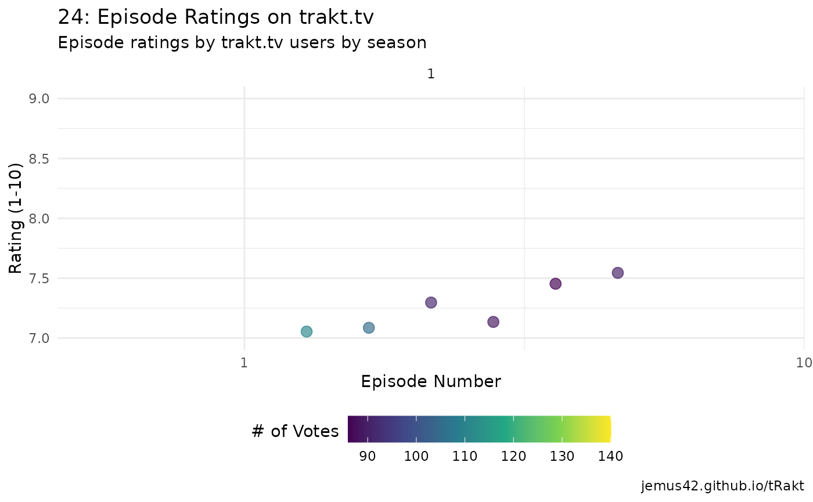

Step 1: Search
Use the search function to find the show you’re looking for.
show_info <- search_query("24", type = "show")
show_info
#> # A tibble: 1 × 9
#> type score title year trakt slug tvdb imdb tmdb
#> <chr> <dbl> <chr> <int> <chr> <chr> <chr> <chr> <chr>
#> 1 show 1000 24 2001 1960 24 76290 tt0285331 1973Step 2: Use the ID
Use the trakt ID (recommended over other IDs) for subsequent API calls.
In this case, we’ll use seasons_summary() to get data for all seasons of the show, while also getting an additional list-column containing all episode data, which includes user ratings.
seasons <- seasons_summary(show_info$trakt, extended = "full", episodes = TRUE)
glimpse(seasons)
#> Rows: 9
#> Columns: 14
#> $ season <int> 1, 2, 3, 4, 5, 6, 7, 8, 9
#> $ rating <dbl> 8.27937, 8.29008, 8.24138, 8.26131, 8.50270, 7.42675, 7…
#> $ votes <int> 383, 262, 232, 199, 185, 157, 148, 135, 167
#> $ episode_count <int> 24, 24, 24, 24, 24, 24, 24, 24, 12
#> $ aired_episodes <int> 24, 24, 24, 24, 24, 24, 24, 24, 12
#> $ title <chr> "Day 1", "Day 2", "Day 3", "Day 4", "Day 5", "Day 6", "…
#> $ overview <chr> "The first season takes place on the day of the Califor…
#> $ first_aired <dttm> 2001-11-07 02:00:00, 2002-10-30 02:00:00, 2003-10-29 02…
#> $ updated_at <dttm> 2022-08-27 12:51:38, 2022-08-27 09:58:53, 2022-08-27 09…
#> $ network <chr> "FOX", "FOX", "FOX", "FOX", "FOX", "FOX", "FOX", "FOX",…
#> $ episodes <list> [<tbl_df[24 x 16]>], [<tbl_df[24 x 16]>], [<tbl_df[24 x…
#> $ trakt <chr> "6262", "6263", "6264", "6265", "6266", "6267", "6268"…
#> $ tvdb <chr> "10063", "10064", "10065", "10066", "10067", "16794", …
#> $ tmdb <chr> "5845", "5846", "5847", "5848", "5849", "5850", "5851",…Step 3: Tidying up
We’re interested in the episodes list-column, which needs unnesting. In this case we can simply use dplyr::bind_rows to take the list of tbls that is seasons$episodes and basically rbind them all together, meaning the result is a tibble of the episode data we care about.
library(dplyr)
episodes <- bind_rows(seasons$episodes)
glimpse(episodes)
#> Rows: 204
#> Columns: 16
#> $ season <int> 1, 1, 1, 1, 1, 1, 1, 1, 1, 1, 1, 1, 1, 1, 1, 1,…
#> $ episode <int> 1, 2, 3, 4, 5, 6, 7, 8, 9, 10, 11, 12, 13, 14, …
#> $ title <chr> "12:00 A.M.-1:00 A.M.", "1:00 A.M.-2:00 A.M.", …
#> $ episode_abs <int> 0, 0, 0, 0, 0, 0, 0, 0, 0, 0, 0, 0, 0, 0, 0, 0,…
#> $ overview <chr> "Counter Terrorist Unit agent Jack Bauer is ass…
#> $ rating <dbl> 7.71574, 7.75962, 7.74749, 7.74506, 7.73058, 7.…
#> $ votes <int> 1671, 1273, 1097, 1063, 991, 952, 926, 927, 900…
#> $ comment_count <int> 6, 2, 1, 1, 1, 0, 0, 0, 0, 1, 0, 1, 0, 1, 3, 4,…
#> $ first_aired <dttm> 2001-11-07 02:00:00, 2001-11-14 02:00:00, 2001…
#> $ updated_at <dttm> 2022-08-27 08:48:17, 2022-08-27 08:48:20, 2022…
#> $ available_translations <list> <"cs", "da", "de", "en", "es", "fr", "he", "hu…
#> $ runtime <int> 45, 45, 45, 45, 45, 45, 45, 45, 45, 45, 45, 45,…
#> $ trakt <chr> "146247", "146248", "146249", "146250", "146251…
#> $ tvdb <chr> "189255", "189256", "189257", "189258", "189259…
#> $ imdb <chr> "tt0502165", "tt0502167", "tt0502169", "tt05021…
#> $ tmdb <chr> "972745", "972752", "972753", "134397", "134398…Step 4: Graph!
Now we have our episode data in a tidy form, might as well look at it.
library(ggplot2)
ggplot(data = episodes, aes(x = episode, y = rating, color = votes)) +
geom_point(size = 3) +
facet_wrap(~season, nrow = 1, labeller = label_both, scales = "free_x") +
scale_x_continuous(breaks = scales::pretty_breaks()) +
scale_y_continuous(breaks = seq(0, 10, .5), minor_breaks = seq(0, 10, .25), limits = c(7, 9)) +
scale_color_viridis_c() +
labs(title = "24: Episode Ratings on trakt.tv",
subtitle = "Episode ratings by trakt.tv users by season",
x = "Episode Number", y = "Rating (0-10)", color = "# of Votes",
caption = "jemus42.github.io/tRakt") +
theme_minimal() +
theme(legend.position = "bottom",
axis.text.x = element_text(size = rel(.6)))